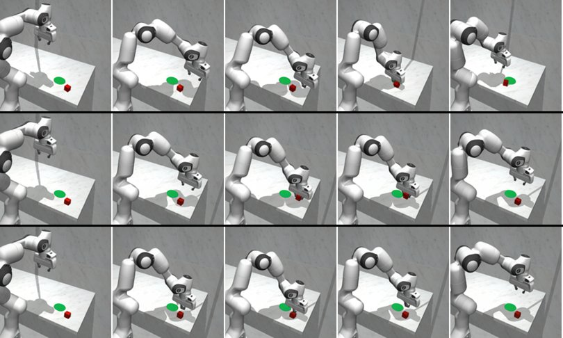
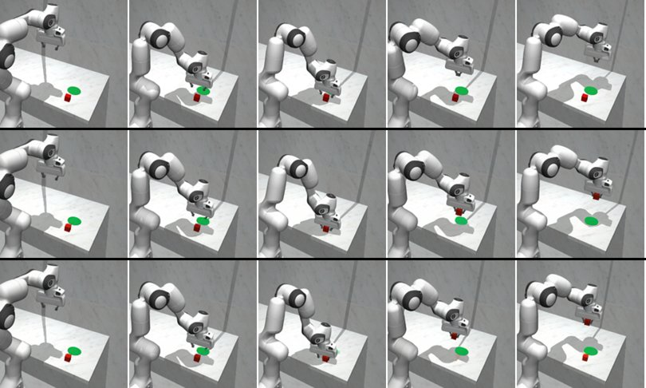
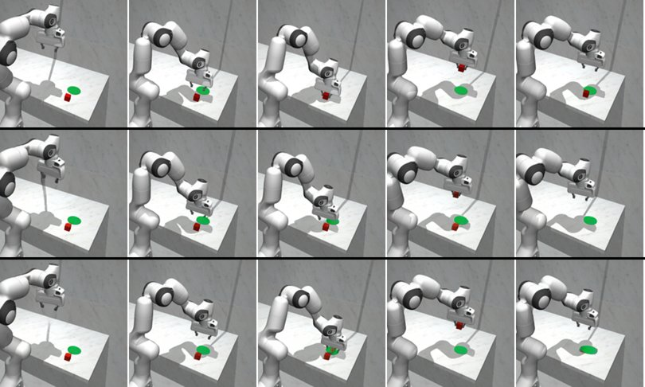
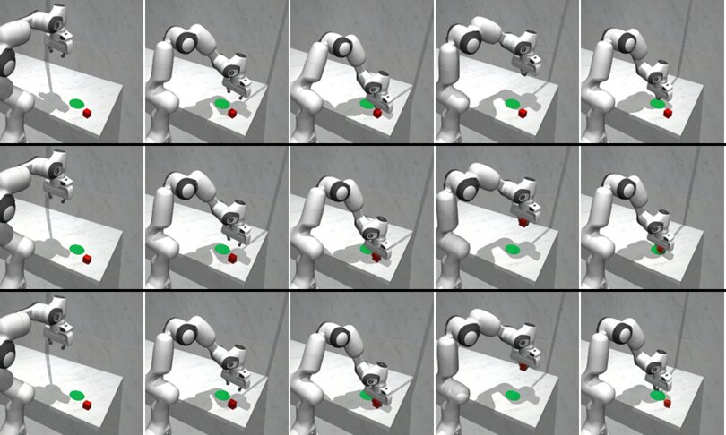
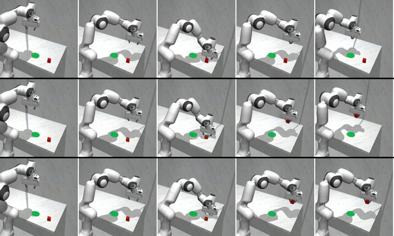
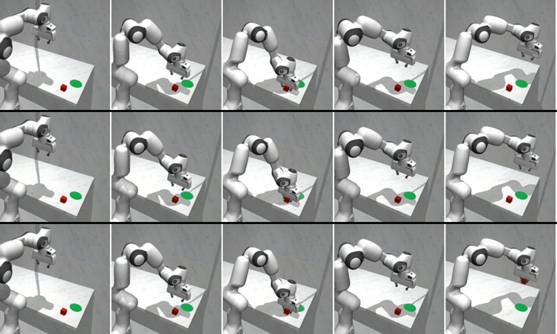
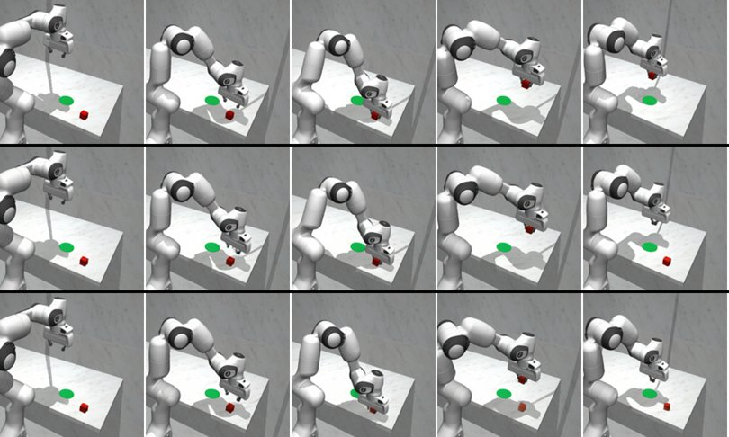
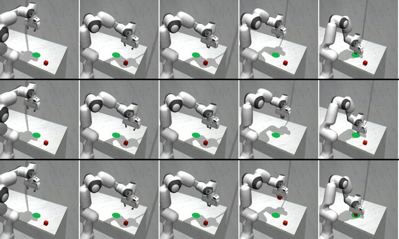

每段视频三列：GT（仿真器真值）| SFT | RL step30。上排整帧，下排红块区域放大。前 2 帧是真实上下文帧，之后 32 帧是模型预测（beam 4，确定性解码）。 右上角标签：GT 列为仿真器 lift 标记；预测列为 tracker 判定（红块比起始位置高 8 px 以上）。播放 4 fps。
g00098_b03 · 仿真结果 contact_without_lift · 夹爪指令 oooooooooooFFFFFFFFFFFFFFFFooooo（o 开 / h 半闭 / F 全闭，每 4 帧一个）· 末端开度 7.8 cm
窗口内 GT 抬起：否 · SFT 预测抬起：是 · RL 预测抬起：否
· ROI LPIPS(32f) SFT 0.151 / RL 0.183
关键帧放大（行：GT / SFT / RL；列：t=2,10,18,26,33）

g00037_b03 · 仿真结果 contact_without_lift · 夹爪指令 ooooooooooooooooFFFFFFFFFFFFFFFF（o 开 / h 半闭 / F 全闭，每 4 帧一个）· 末端开度 0.1 cm
窗口内 GT 抬起：否 · SFT 预测抬起：是 · RL 预测抬起：否
· ROI LPIPS(32f) SFT 0.093 / RL 0.102
关键帧放大（行：GT / SFT / RL；列：t=2,10,18,26,33）

g00037_b08 · 仿真结果 dropped_before_goal · 夹爪指令 oooooooooooFFFFFFFFFFFFFFFoooooo（o 开 / h 半闭 / F 全闭，每 4 帧一个）· 末端开度 7.8 cm
窗口内 GT 抬起：是 · SFT 预测抬起：否 · RL 预测抬起：是
· ROI LPIPS(32f) SFT 0.155 / RL 0.145
关键帧放大（行：GT / SFT / RL；列：t=2,10,18,26,33）

g00098_b07 · 仿真结果 grasp_miss · 夹爪指令 ooooooooooooFFFFFFFFFFFFFFFFFFFF（o 开 / h 半闭 / F 全闭，每 4 帧一个）· 末端开度 0.1 cm
窗口内 GT 抬起：否 · SFT 预测抬起：是 · RL 预测抬起：是
· ROI LPIPS(32f) SFT 0.075 / RL 0.068
关键帧放大（行：GT / SFT / RL；列：t=2,10,18,26,33）

g00059_b07 · 仿真结果 grasp_miss · 夹爪指令 oooooooooooooooFFFFFFFFFFFFFFFFF（o 开 / h 半闭 / F 全闭，每 4 帧一个）· 末端开度 0.1 cm
窗口内 GT 抬起：否 · SFT 预测抬起：是 · RL 预测抬起：是
· ROI LPIPS(32f) SFT 0.124 / RL 0.136
关键帧放大（行：GT / SFT / RL；列：t=2,10,18,26,33）

g00071_b03 · 仿真结果 grasp_miss · 夹爪指令 oooooooooooooohhhhhhhhhhhhhhhhhh（o 开 / h 半闭 / F 全闭，每 4 帧一个）· 末端开度 6.4 cm
窗口内 GT 抬起：否 · SFT 预测抬起：否 · RL 预测抬起：是
· ROI LPIPS(32f) SFT 0.054 / RL 0.066
关键帧放大（行：GT / SFT / RL；列：t=2,10,18,26,33）

g00006_b01 · 仿真结果 success · 夹爪指令 oooooooooooooFFFFFFFFFFFFFFFFFFF（o 开 / h 半闭 / F 全闭，每 4 帧一个）· 末端开度 3.8 cm
窗口内 GT 抬起：是 · SFT 预测抬起：是 · RL 预测抬起：是
· ROI LPIPS(32f) SFT 0.078 / RL 0.136
关键帧放大（行：GT / SFT / RL；列：t=2,10,18,26,33）

g00006_b07 · 仿真结果 grasp_miss · 夹爪指令 ooooooooooooFFFFFFFFFFFFFFFFFFFo（o 开 / h 半闭 / F 全闭，每 4 帧一个）· 末端开度 0.3 cm
窗口内 GT 抬起：否 · SFT 预测抬起：是 · RL 预测抬起：是
· ROI LPIPS(32f) SFT 0.124 / RL 0.063
关键帧放大（行：GT / SFT / RL；列：t=2,10,18,26,33）
